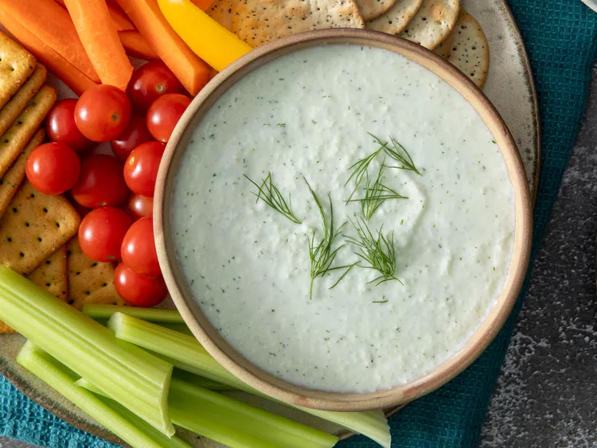

Tzatziki Sauce

An easy tzatziki sauce recipe that goes great with salads or can be used for dips. Photo and recipe from allrecipes.com.
Ingredients
- 2 cucumbers
- 1 container of Greek yogurt
- 3 cloves of garlic, minced
- 2 tablespoons of olive oil
- 1 tablespoon of chopped fresh dill
- ½ medium lemon, juiced
- Salt and ground pepper to taste
Steps
- Peel cucumbers; remove seeds with a spoon. Grate cucumber on the large holes of a box grater, then squeeze to drain excess liquid.
- In a food processor combine the grated cucumber with Greek yogurt, garlic, olive oil, dill, lemon juice, salt, and pepper. Blend until smooth.
- Serve immediately or for best flavor cover and refrigerate for at least 1 hour before serving.
Back to homepage